Content Outline
- How to apply domain ownership when defining data product boundaries.
- How domain analysis techniques help identify coherent ownership zones.
- How capability decomposition and use cases guide modeling choices.
- How to compare boundary heuristics and choose fit-for-purpose splits.
- How to assign ownership to teams closest to domain context and data meaning.
- How individual data products combine into a coherent domain landscape.
S01 - Designing and Domain-oriented
Designing domain-oriented data products.
Establishing data product boundaries.
S02 - Business and Area
focuses on the data mesh’s domain ownership principle. Domain ownership is about decentralizing responsibility for data and shifting it to business domains.
What does decentralizing responsibility mean for an individual development team? If the organization take a team that builds a software component allowing users to register, this component creates data—user data.
The logic behind decentralization is that the people closest to a business area know the most about its generated data and are best suited for tasks related to that business area. The organization might ask how being closest to the business area is helpful when.
Consider the case of a data engineer in the central data team responsible for the Central Statistics Office in the country (or perhaps the US Census Bureau). The organization is asked to prepare statistics about fire incidents in office buildings.
However, the number is much higher than in previous years. As a result, the government heavily increased its spending on the fire department.
But the truth is, the number of fires has not increased. The initial calculation was wrong because of someone’s ignorance.
To learn how to apply decentralization in a domain-oriented way, will consider how business activities influence the design and ownership of data products. But how does this whole chapter fit into the bigger picture?
The goal of is to find possible boundaries of data products. This is a recurring, never-ending process.
S03 - Business Case and Drivers
Choose the business case to enable with data.
Define data products needed (find the boundaries of data products required to solve that problem and choose owners).
Develop the data based on consumer needs and the discovered boundaries, and then treat the data as a product.
Improve or extend the platform based on the needs of the data product development team.
Establish or revisit governance policies that will enable further improvement of the mesh.
Measure whether the organization is going in the right direction and repeat the whole cycle.
focuses on step 2 of this process. will define data product boundaries and then apply ownership.
In, teams described a simplified way of finding data product boundaries, using the simple business processes and datasets involved., will give the organization more tools for the toolbox so that It is possible to find boundaries that better reflect the business and that will.
The process starts the process of finding boundaries by explaining how to understand, capture, and visualize the domain and define domain and domain-driven design. will use the domain storytelling technique.
Following that, describes how to decompose the domain by using business capability modeling. Teams also will explain how those techniques will help the organization find the boundaries of data products.
Next, presents an alternative way of finding data product boundaries, using data use cases. In the end, the organization will be able to apply team ownership to data products.
After that, will explore the concept of heuristics and how to use it to find even more possible boundaries of data products. presents multiple heuristics.
Finally, will take a step back to look at the data mesh from the perspective of multiple interconnected domain-oriented data products.
All those steps form a process, illustrated in.
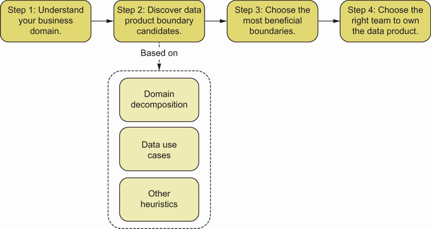
S04 - Business and Domains
Understand and capture the business domain.
Business domains and datasets originated in these domains.
S05 - Choose and Lead
Compare boundaries discovered using previous methods and choose the most beneficial.
Choose the right team to own the data product.
All of these steps can be done using workshop techniques, such as workshops facilitated by a data mesh champion, architect, tech lead, or internal or external facilitator. In fact, anyone who understands this process and has experience with facilitation can lead it.
S06 - Domain and Capture
Capture and analyze the domain.
Assign datasets to each domain.
S07 - Define and Cases
Define data use cases.
Define data product boundaries using data use cases.
S08 - Ownership and Domain
Apply ownership of data to the right team.
The first step to applying domain ownership is to understand the domain. examines get to it.
S09 - Domain and Visualization
describes what the domain is and how to capture, visualize, and analyze it. This process is a foundation of the domain-ownership principle.
The result of be a visualization and common understanding of the business domain that the organization will use to do the following.
Decompose the whole domain based on the visualization and captured knowledge into smaller subdomains. Datasets that are originated from these subdomains will be possible boundaries of the data products.
Based on the visualization, the organization will be able to look for data use cases in the company and describe them properly. These data use cases will serve as possible boundaries of the data products.
After the enormous success of the data mesh MVP, the Messflix CEO has asked the organization to solve problems with data ownership. The problem is that the Data team owns all the data, and that team has quickly become a bottleneck.
To understand the root causes of this problem, the organization talk to business experts and technical leaders. Unfortunately, the organization quickly find out that It is not possible to understand one another because everyone seems to be speaking different languages.
This is the first experience with the entertainment industry, and the organization don’t know how it works. Because the organization don’t understand the domain, the organization don’t know where data belongs.
Because the organization knows it is impossible to propose a solution without understanding the problem and its context, the organization decides to capture and analyze the business domains. The steps the organization take are quite simple.
Invite the right people.
Choose the right tool to discover the domain.
Facilitate a workshop session and capture the domain.
S10 - Domain and Area
presents a deep dive into domain-driven design (DDD) and its core concept: the domain. The principle of domain ownership is about shifting responsibility for data toward those closest to its point of origin.
DEFINITION The Cambridge Dictionary defines domain as “an area of interest or an area over which a person has control.” In DDD, the domain is the area of interest. It could be a business as a whole or just a part of the business.
Decentralization is one of the cornerstones of the data mesh. The most effective and scalable way to achieve decentralization is to base it on domains.
DDD is a software design approach that emphasizes common models and language between business and development teams.
At Messflix, the business people call a paying customer a subscriber. Therefore, following DDD principles, the Yellow team developing Messflix Streaming Platform uses the word subscriber in its internal conversations, requirements, documentation, and code (e.g., class names).
Achieving a shared understanding of a business, its rules, and policies is at the heart of the DDD approach. Eric Evans’s Domain-Driven Design: Tackling Complexity in the Heart of Software (Addison-Wesley) introduced that approach in 2003.
S11 - Patterns and Design
- Tactical patterns Design patterns for object-oriented programming.
- Strategic patterns Patterns focused on domains, dividing responsibility and ownership, and communication (between systems and people responsible for those systems).
From the perspective of the data mesh, strategic patterns are more relevant, because the goal is to design ownership, responsibilities, and communication. explains how It is possible to utilize DDD domain concepts in practice.
S12 - Know and Domain
The organization now know what the domain is. The organization also know that one of DDD’s goals is to set up a common language.
During the MVP exercise, the organization performed stakeholder mapping. However, the scope is much more expansive this time, as is the group of people It is necessary to communicate with.
S13 - Analysts and Scientists
Data analysts or scientists.
Principal or senior engineers.
S14 - People and Domain
Chief or lead architects.
Depending on the company size, domain discovery may require iterative approximation by organizing multiple meetings of various sets of business and technical experts. Some of these people and their teams might own or consume data products the organization will define in upcoming sessions.
Getting the right people in a single room (physical or virtual) and dropping on their laps the question “What is the domain?” or “What is the business area about?” is usually counterproductive. People don’t know what the organization don’t know.
S15 - Method and Domain
Multiple techniques can be used to capture business knowledge, but teams highly recommend the method that arose inside the DDD community: domain storytelling. This method can be handy because it was designed with domain thinking in mind.
S16 - Rich and Pictures
Teams also recommend two other domain-capturing techniques: rich pictures and event storming. Event storming, invented by Alberto Brandolini, is one of the most well-known facilitation techniques in the DDD community.
This method works best in a face-to-face environment because of its inherently dynamic nature. Its power comes from discussions of spontaneously forming subgroups.
The rich pictures technique, developed as part of Peter Checkland’s soft systems methodology (SSM), is straightforward and isn’t focused on any formal notation. Instead, this technique is a way to discover, define, or capture an idea in the form of diagrams.
Because of its simple nature, the rich pictures technique can work in any kind of environment: remote or in person. It is a great tool to complement other exercises.
reviews domain storytelling in a little more detail. Teams do not delve into this technique’s mechanics or facilitation methods here, because other books cover these topics.
S17 - Stories and Domain
Consider choosing domain storytelling to perform domain discovery for Messflix.
TIP To make a workshop efficient, it is critical to invite the right people and the correct number of them. From the experience, It is recommended to not exceed 15 people; otherwise, the organization will not be able to keep them engaged.
The organization ask the participants to tell specific stories from their business perspective, and while they are doing it, the organization try to visualize those stories.
The philosophy underlying domain storytelling is that people naturally like to tell stories and that stories can drive the understanding of things, concepts, or processes. Telling stories is natural to humans.
A significant advantage of domain storytelling is how easy it is to understand its results, even for those who didn’t participate in the exercise. It is also an excellent base for domain decomposition, because it’s easy to identify groups of noninterconnected stickers, which often.
A word of warning, though: make sure not to let the most extroverted members of the team hijack the whole meeting. It’s the role to ensure that even the shyest participants have a chance to tell their stories!
At Messflix, the organization decides to proceed with domain storytelling because it doesn’t depend on the physical presence of the participants; it’s single-phase. It’s also simpler to facilitate than event storming.
Because the organization find a common language with the peers, the organization’re ready to step up the game and move to ownership decentralization., the organization will learn how to use domain decomposition to find data product boundaries.
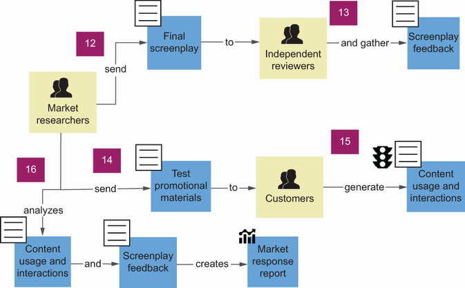
S18 - Data Product Team Structure
will use domain decomposition based on business capability modeling to find data product boundaries. Then, based on these boundaries, will pass the domain ownership to the relevant team.
At Messflix, following the domain storytelling sessions, it’s time for a hearty discussion with the technical leaders about their problems. First, the organization interview senior engineers, technical leaders, and architects of systems of records and operational systems, producing and capturing data.
It is tough to evolve systems. The Data team creates data pipelines directly integrated with the system of record databases or spreadsheets maintained by different teams.
Every release requires testing and a sign-off from the system of record and the central data teams.
System developer teams are overflooded with bugs raised by the Data team (e.g., data pipelines break if someone from the business team makes an error filling out the spreadsheet).
Then the organization interview the Data team and ask about their collaboration with system of records teams. This is what the organization hear.
The Data team members don’t understand the data they are responsible for. It’s impossible to be an expert in all aspects of various data types: financial, content production, market, etc.
It is hard to extract meaningful data from other teams’ databases or files, because schemas are not self-explanatory. For example, the movie production cost spreadsheet uses unexplained acronyms as column names.
The work is tedious because of the need to constantly fix broken data pipelines.
The Data team is asked to prepare analyses on top of the company data. Still, that data is hidden inside the systems, and extracting that data slows new initiatives.
In, It is possible to see Messflix’s system landscape., to keep things simple, will focus on just part of it: Hitchcock Movie Maker and its surroundings.
Hitchcock is responsible for storing and reviewing scripts/screenplays, visualizations of movie market trends, managing the production of the movie (cast, production costs, etc.). It is connected to the API of an external system called World Movie DB.
In the bottom-center, It is possible to see that Messflix built a big data warehouse, storing all financial data from the production and ERP system, which is used in the form of reports by the CEO to plan future steps of the company. The aforementioned.
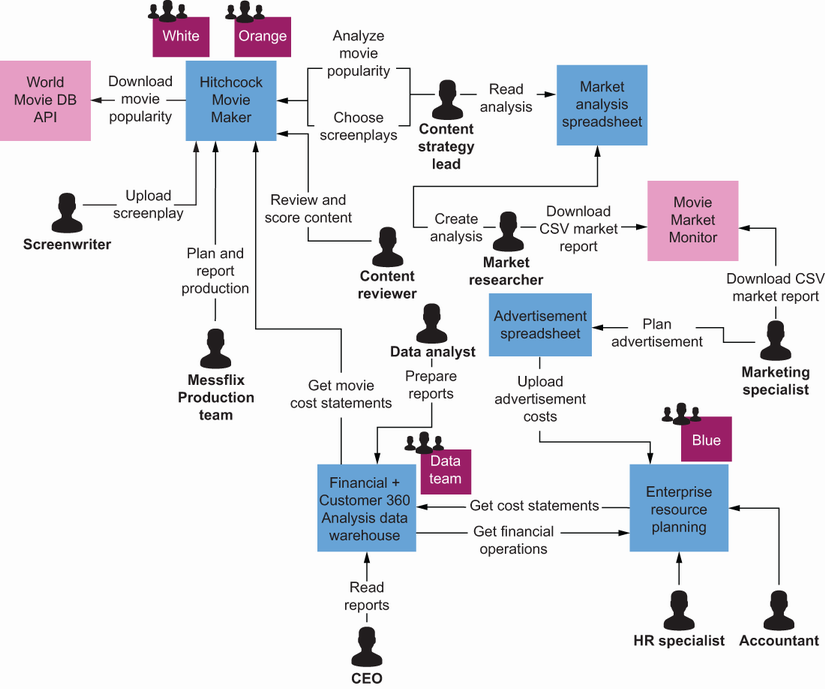
S19 - Data Product Team Structure
List related data to each domain.
Pick the correct boundaries of the data product.
Choose the team that should own it.
examines these steps in detail in subsequent sections. However, before teams jump into details of the solution, it is necessary to introduce some crucial concepts taken from DDD and business architecture.
S20 - Domain and Subdomain
As stated before, the domain is an area of interest or an area someone controls. The subdomain is a child domain contained within another domain, as illustrated in.
Domain and subdomain, however, lack precise definitions, which makes them hard to apply. Teams (the authors) discovered that a much better fit for domain decomposition is the concept of business capability, derived from the world of enterprise and business architecture.
In, It is possible to see the relationships between domain, subdomain, and business capability. A subdomain is a part of the domain; a domain may contain multiple subdomains.
Now that the organization’ve seen an abstract diagram of these relationships, reviews a specific example. depicts a Provide Pharmaceutical domain and its subdomains: Discover Drugs, Distribute Drugs, Perform Clinical Trials, and Develop Drugs.
reviews what makes business capability a more precise definition in the context. A business capability is what a business can do.
By focusing on the outcome, teams give ourselves the freedom to do and change whatever is needed to deliver as much business value as possible. Therefore, It is advisable to also focus on the outcome (qualitative), not the output (quantitative).
Business capability should be phrased as a verb-noun combination, and this structure will help teams focus on the activity and its outcome. shows how to phrase business capabilities correctly, as well as common mistakes, such as answering the wrong questions.
It is vital to define the name of a capability and its desired outcome (not output). shows an example.
A well-defined business capability can be approximated to a standalone product or service that could be sold or outsourced. Such a decomposition gives teams a stable structure composed of autonomous and usually loosely coupled parts.
reviews how it works at Messflix. The Produce Content domain, presented in, can be split as follows.
- Ideate Content subdomain The outcome is a list of screenplays that the audience should enjoy.
- Prepare Production subdomain Prepare everything needed to start shooting, including cast, audience, locations, and equipment.
- Execute Production subdomain The outcome is raw shots that are ready for postproduction.
- Execute Postproduction Process the shots, add special effects and the soundtrack; the outcome is audiovisually engaging content.
The business capability model is hierarchical and time resilient (business capabilities usually change only when the business model changes), with autonomous capabilities focused on providing business value. All these properties make business capabilities a perfect base for forming the following.
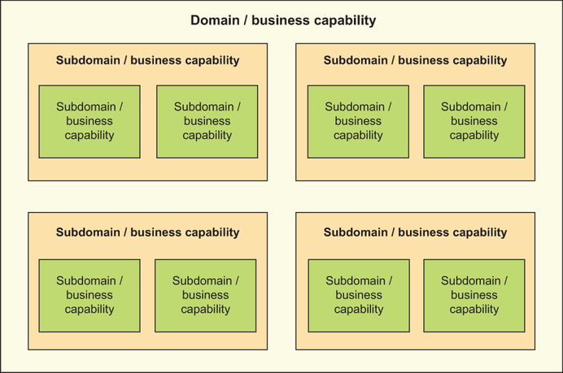
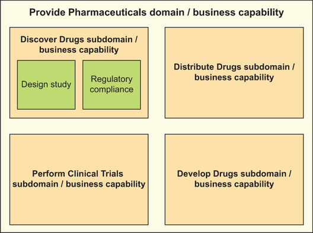
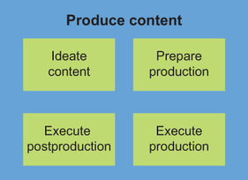
S21 - Business and Capabilities
The structure of data ownership.
the organization learned why boundaries of business capabilities help design boundaries of data products. However, the organization still don’t know how to find boundaries of business capabilities.
As stated before, it is generally accepted that that the domain, subdomain, and business capability can be treated as equivalent concepts; business capability has a more precise definition than domain or subdomain. Teams also think that the best way to decompose a domain and visualize its.
As It is possible to see, teams divided Messflix into five major business capabilities: Operate Business, Distribute Content, Improve Experience, Grow Customer Base, and Produce Content. Each capability is further divided into smaller capabilities; for example, Produce Content is divided into Ideate Content, Prepare Production, Execute.
Business capability modeling is a technique widely used by business architects and enterprise architects. It is an excellent foundation for reorganizing businesses.
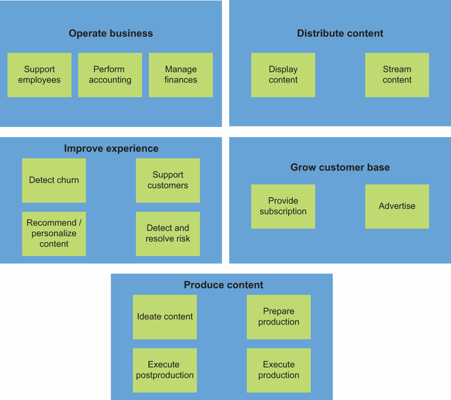
S22 - Business and Capability
Teams introduced some concepts from DDD and business architecture, but how are these definitions related to data? It is possible to think of data as a by-product of business-as-usual operations of the domain or business capability, or sometimes as a fuel needed to deliver business capability.
For example, the Ideate Content capability produces a list of ideas for films, with scoring (by-product) and scripts chosen for production (output). This data can be human input (film ideas, scripts) or algorithm/machine output (scoring).
What It is possible to learn from is the premise that all data in the business is either produced or used by business capabilities. Therefore, It is possible to safely assume that every dataset belongs to a business capability, giving this dataset a context of usage and reason.
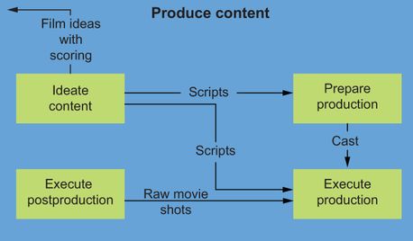
S23 - Domain and Datasets
Because of the close connection between data and business capabilities, It is possible to think of a capability as a boundary, or a home, for the associated data. In this case, a business capability becomes a boundary for one or more domain datasets (a domain-oriented.
As It is possible to see, domain A has three data products inside it: data products X, Y, and Z. A data product can have one domain dataset (data product Y with domain dataset 3) or multiple domain datasets (data product X with domain datasets 1.
examines wrap up. To discover data product boundaries by using domain decomposition, It is necessary to take these steps.
Match data flows between them. Teams are looking for cohesive datasets with their own business meaning.
Identify data product boundaries by checking the origin of domain datasets. If few domain datasets originate from the same source and are coupled and cohesive, they could be grouped into one data product.
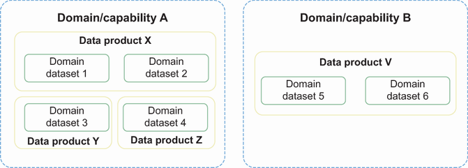
S24 - Data Product Team Structure
At Messflix, the organization decides to use the business capability model to discover and define data products. reviews how it works for the Produce Content domain.
For each capability, the organization list all domain datasets’ outputs, by-products, or fuel. As a result, the organization get the map presented in.
TIP Each of the identified domain datasets is a natural candidate for a data product. However, sometimes it makes sense to group multiple domain datasets.
After brainstorming with relevant business and IT teams, the organization decides to create five data products for the Produce Content domain, as explained in.
The organization decide not to include special effects, soundtrack, and shots because It is not possible to figure out how to use that data outside its in-domain use of movie production/postproduction.
The organization end up with clear ideas and boundaries for Messflix data products. This creates a foundation for deciding about decentralized ownership.
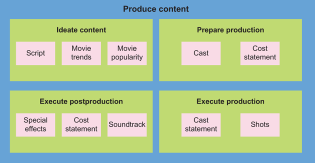
S25 - Data Product Interfaces
Quality, cleansing, and deduplication.
covers just the first four items. The rest are covered in other chapters.
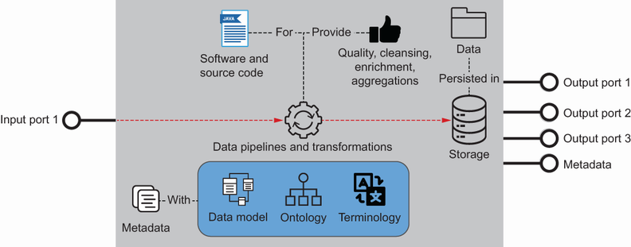
S26 - Data Product Interfaces
Teams’ve decomposed the data landscape into data domains and established their clear ownership. Teams are responsible for the data that resides in the data domain.
To be more precise, the data-owning team is responsible for data persistence (database, documents, files), the way that data is modeled (schema), and how and for whom data is exposed (API, ports, security, privacy). So if there is a requirement to expose the production.
S27 - Code and Responsible
The massive difference between other approaches and the data mesh is that the team owning the data is also responsible for all of the code that created the data and its specific formats. So the team is responsible for the code of data pipelines.
But source code is not enough to create working software. The team needs to follow DevOps culture and describe and spin up the required infrastructure and software delivery pipelines.
S28 - Quality and Specific
For specific purposes, data needs to meet a certain quality level. In the data mesh paradigm, the owning team is responsible for understanding consumer needs and providing the data that meets quality requirements.
S29 - Information and Cost
Sometimes users need a more aggregated form of information or information enriched with additional data. Some of these enrichments and aggregations are also in the scope.
reviews the production cost statement example. A cost statement could be created weekly.
As It is possible to see, with this approach, more responsibility is moved closer to the data-producing teams. In the following subsection, the organization will see how a similar shift in ownership and responsibility works at Messflix.
S30 - Involves and Scripts
Now that the organization’ve identified domain boundaries, the organization decides to analyze the Messflix systems architecture and form the teams that should own the newly established data products.
- Scripts Involves writing and reviewing scripts using a microservice with its own database.
- The main Hitchcock application Involves movie producing and choosing the right movies to be created using a monolithic application with its own database.
- Cost statements Involves tracking spending during production, which is captured in spreadsheets.
S31 - Data Product Interfaces
- World Movie DB API An external application with movie popularity data.
Each part is owned by a dedicated team. For example, scripts are handled by the White team, production cost statements are handled by the Orange team, and the data warehouse is managed by the Data team.
In the Produce Content capability, teams discover five data products: Scripts, Movie Popularity, Movie Trends, Cost Statement, and Cast. Movie Trends are excluded from the consideration at this point, because they are not part of the Hitchcock system.
The Cost Statement dataset is an excellent example of strong coupling with the Data team. This dataset is needed in two places: the data warehouse for reporting and analysis purposes, and the ERP system for accounting.
The Orange and White teams don’t feel responsible for this integration. The Orange team, which owns the production cost statement, doesn’t intervene when the Movie Production team quite often changes the format of the submitted file.
The solution for this problem is to create a data product out of cost statement data and move it to the Orange team, which is already responsible for the Produce Content capability in Hitchcock. The Orange team would be responsible for keeping the schema.
As It is possible to see in, inside the scope of the Cost Statement data product, a script is used to transform the spreadsheet into an easily consumable and well-described format and storage for output files.
Movie Popularity is an example of an external dataset that the organization is paying for. Making a data product out of it brings a couple of benefits to the company.
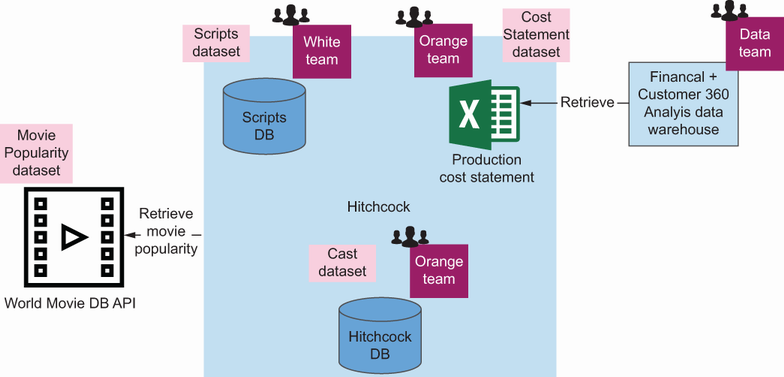
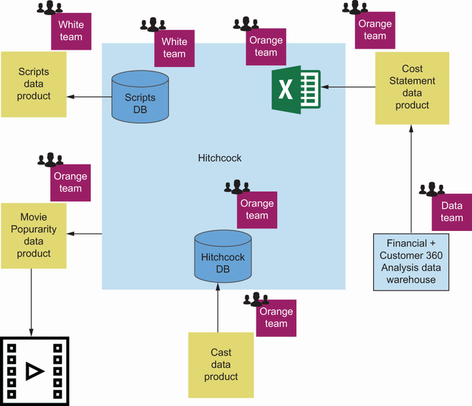
S32 - Orange and Datasets
Ensuring data accessibility for other departments.
The organization choose the Orange team as the owner, because Movie Popularity is used primarily by that team’s system. At the same time, the organization notice the growing responsibilities of the Orange team and make a note to consider moving that responsibility somewhere else.
The Cast and Script datasets are good examples of data products created for new business possibilities. These datasets are hidden deep in Hitchcock’s monolith database, where teams have to access them directly through the database (which is problematic for many reasons).
will use an alternative method to discover boundaries of data products: data use cases.
S33 - Messflix and Establish
presents the Messflix data landscape from a different angle. will focus on analytical and data-heavy use cases to establish boundaries of needed data products.
Even though some data responsibilities have been moved to source systems, the Messflix Data team is still too big. The team members also struggle to establish true collaboration with dashboard owners, data analysts, and data scientists.
It’s hard to decide on priorities when teams have just one team with too many goals. Moreover, business stakeholders have ideas on using the already captured datasets to be more competitive, but the Data team can’t handle additional responsibilities.
S34 - Cases and Each
Find data use cases.
List data related to each use case.
Group data use cases into data domains.
Choose a team to own each domain.
S35 - Market and Analyze
An excellent way to discover data domains is to analyze the consumers and use cases of the data. Here are some examples of the use cases.
The data analyst looks at film rankings and popular hashtags to find current trends in the market.
The market researcher analyzes mentions and interactions with the published content to prepare a market response report.
Marketing staff members analyze the Financial Analysis + Customer 360 data warehouse to create customer segmentation.
If the organization look at, such use cases could be derived easily from domain storytelling, but they would be existing data use cases. It is necessary to talk to the business stakeholders to understand their plans for data application.
In the case of Messflix, company leaders are planning to utilize the existing data for automatically recommending scripts for production.
examines try to write down required use cases in a more descriptive manner. That will help teams analyze them later.
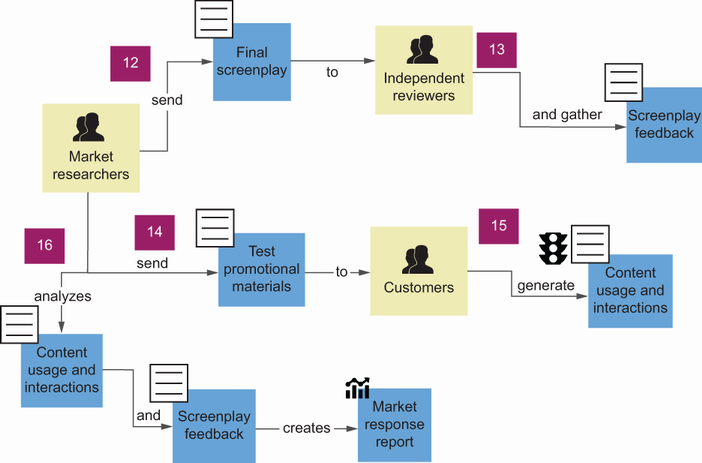
S36 - Make and Description
To make the description of a data use case self-explanatory, It is necessary to capture at least the following.
How the data is being used (activity).
S37 - Reason and Doing
The reason for doing something with that data (reason).
To make sure everything is captured, the organization use a template similar to the one for a user story.
S38 - Analyst and Film
As a data analyst.
Using film rankings and popular hashtags datasets.
S39 - Case and Template
Using such a template helps truly understand a data use case. The business reason behind the use case is apparent in this example: data is used to recommend movie categories for production.
S40 - Production and Cost
Using production cost statements, financial data from accounting and subscriptions.
As a content strategy lead.
I want to analyze new scripts and select promising ones, which should be filmed with a proposed cast.
S41 - Produce and Movies
So that I can produce movies that will gather more audience.
I want to find trends in the movie market.
S42 - Decide and Movies
So that I can decide what movies should be produced next.
I want to find trends in the movie market.
S43 - Cases and Boundaries
So that I can target marketing content better.
Having these use cases, It is possible to try to align their boundaries with the boundaries of data products. For the analyzed use cases, the organization define four data products.
S44 - Product and Script
Script Recommendations data product.
Marketing Movie Trends data product.
The organization define possible data products in the domain. However, by looking at the associated datasets, It is possible to see that data comes from multiple sources, and some overlap exists too!
To answer this question, teams must first look at two more concepts from DDD: model and bounded context.
S45 - Model and Business
Domains, subdomains, and business capabilities are terms used to describe the business. At the same time, they form a good blueprint for system boundaries, data, and teams.
Model and bounded context in DDD come from the solution space. Teams create the model to solve the problem.
A model is a simplification and abstraction of a fragment of reality. Models are always created for a specific purpose and to solve a particular problem.
In the DDD approach, teams base the software solution on a domain model emerging through analysis of business and its needs. The model can have multiple representations, such as application source code, documentation, graphical (e.g., Unified Modeling Language, or UML, diagrams), dictionary, tests, and.
In a data mesh, It is possible to treat a data product as a bounded context. Finding the proper boundaries is always a decision between a more generic, reusable model and a specific, single-purpose one.
With that knowledge, It is possible to revisit the boundaries of use-case-driven data products.
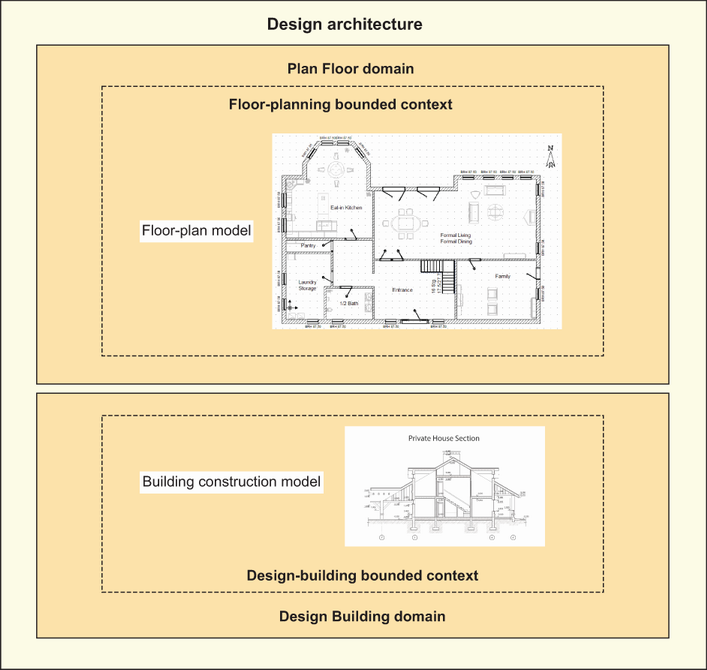
S46 - Products and Product
will think about the models needed to fulfill data use case needs. will see if this concept somehow influences the boundaries of data products, and will consider the responsibilities of teams owning them.
Script Recommendations data product.
Marketing Movie Trends data product.
The Financial Analysis/Reporting and Script Recommendations data products remain unchanged, but teams decide to merge two other data products into one Movie Trends data product. The reasoning behind that change is described next.
S47 - Financial and Analysis
The Financial Analysis/Reporting data product will be an aggregation of data coming from multiple sources: production cost statements, financial data from accounting, and subscriptions. However, it won’t be a simple data cloning.
For example, If the organization want to run financial analysis across the enterprise, It is necessary to design a model fit for that purpose. In a relevant data product scope, there would be code responsible for transformations, aggregations, and storage.
S48 - Data Product Team Structure
The Script Recommendations data product will support the decision-making. Its outcome should be a stream of recommendations.
This team will also not be responsible for data sources, such as movie popularity or movie trends. These datasets should be provided by other teams, preferably as data products.
S49 - Data Product Team Structure
presented an idea to create two data products: a Content-Producing Movie Trends data product and a Marketing Movie Trends data product. However, the underlying models are so similar that it makes sense to generalize and harmonize them, enabling the development of just one: a.
The team owning this data product will consume data from the external system: Movie Market Monitor. This team will then be responsible for this data download, storage, transformation into movie reports, and ensuring access via the API.
S50 - Data Product Team Structure
The method of finding data product boundaries does not change the way It is recommended to assign the ownership of the resulting data products. Again, the data product should be owned by the team closest to the data.
For the Financial Analysis/Reporting data product, ownership lies with a team owning and supporting financial BI tools used by the CEO.
The Script Recommendations data product should be managed by a dev team writing and releasing the ML algorithm recommending scripts.
Finally, the Movie Trends data product should be maintained by a team already familiar with the movie market domain. Possibly, that could be the team owning the script recommender.
The domain decomposition approach and data use cases are the most practical, but at the same time, these are just two possible heuristics that can be applied. explains what a heuristic is, other possible heuristics to be used, and how the organization.
S51 - Ownership and Domain
uses a more systematic approach to choosing proper ownership: heuristics. summarizes a variety of possible ways to apply domain ownership to decentralization.
At Messflix, the organization’ve applied domain decomposition and data use cases, and yet, after all the work is done, the organization still have some datasets not assigned to any data products. The central data team is one that still owns some unrelated datasets.
S52 - Options and Create
Create many options using design heuristics.
Establish tradeoffs, and weigh pros and cons.
Select the best options.
S53 - Heuristic and Past
A heuristic, as defined by the Oxford English Dictionary, is “a method of solving problems by finding practical ways of dealing with them, learning from past experience.”.
This is a technique of choosing a solution based on past experiences. It gives the organization some options on how to solve a problem; although the results are not guaranteed to be optimal, they should be good enough in most cases.
If the organization want an example of a heuristic approach, think of rules of thumb. The organization apply them whenever it makes sense.
The most simple heuristic in the case is to create a data product for every domain dataset identified in the domain.
S54 - Different and Lenses
It is possible to think about heuristics as different lenses through which It is possible to look at the same problem. When the organization switch lenses, the organization will see the problem from a different perspective and discover alternative solutions.
S55 - Purposes and Group
This subsection presents the heuristics it is generally accepted that are the most useful for this material’s purposes. The list is not complete, and teams hope that the organization and the community will find more interesting and beneficial ones.
This is the most important heuristic. It should be the default solution.
As teams described in, the other most widely applicable boundary is the group of related use cases. The best way to group use cases is to collate them by their purposes and business value.
S56 - Heuristic and Another
Another heuristic related to the previous one is to group use cases based on the persona/actor/consumer performing the analysis or for whom those analyses are done.
The Movie Trends data product is an excellent example of how this heuristic can be applied. Teams established that teams have two consumers: a marketing specialist and a content strategy lead.
S57 - System and Cases
In most cases, source systems are owned by teams that know the most about the data they produce. This is why it makes sense to create one or more data products derived from the data coming from each system and give the ownership for.
The Hitchcock system is an example of the application of this heuristic. Two teams are involved in this system development.
S58 - Tool and Dashboards
Quite often, dashboards and visualizations are designed with a specific business purpose in mind. Therefore, it is possible that data served on dashboards can be formed into data products.
It is possible to align the Movie Trends data product with the marketing BI tool, and the Financial Analysis/Reporting data product with the financial BI tool. This heuristic applies if the BI tool, dashboard, or visualization serves a single purpose or similar purposes.
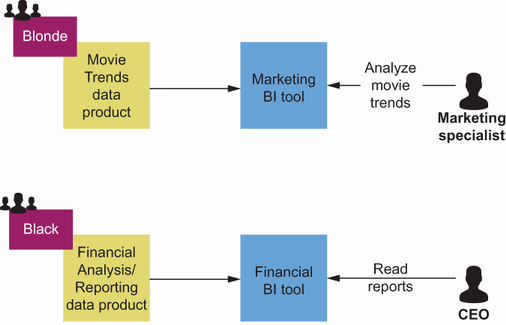
S59 - Domain and Physical
Another way to define a data domain is to look at core physical entities used by various levels of the business. An example of such a data domain could be Customer 360, which describes the physical entity of each customer.
However, It is necessary to be highly cautious when defining boundaries by using this heuristic. It often leads to centralized data warehouse solutions.
S60 - Product and Datasets
Domain datasets stored in a data product should form a cohesive model. Therefore, whenever the organization notice that some datasets in the data product are not related, it is a sign that It is recommended to think about dividing the data product into smaller pieces.
A good example is a data product that stores aggregated financial data and, at the same time, customer 360–type of data. In such cases, It is not possible to refer to a specific customer in aggregated financial data, and there is no shared business goal.
At the same time, It is advisable to also avoid creating data products for just a part of the domain dataset. Domain datasets, by the definition, are the most granular datasets that still have a business value of their own.
Imagine the organization create two data products: Subscriber Details and Home Address. In the Home Address data product, the organization store country, state, street, and home number.
This heuristic implies that the smallest viable data product is the size of the domain dataset. This could often be a good default solution, but It is necessary to consider its feasibility.
S61 - Canonical and Model
The canonical model of the entire enterprise usually leads to losing the context of the stored information and architecture of the centralized data warehouse responsible for storing that canonical model. This design is the reverse of a data mesh architecture that is meant to.
S62 - Data Contracts
Datasets in a data product should be shared under the same usage contract. Because a data product will be an autonomous component in most cases, it will be much easier to enforce contracts and authorization on the data product level.
An example of such a contract is personal data under the European’s Union GDP. It is advisable to separate the Subscriber data product (which stores such data).
S63 - Company and Boundaries
In big corporations, it is necessary to think about teams and systems, as well as the company hierarchy and departments. Crossing organizational boundaries is often impossible because of budgeting, for example.
examines imagine that Messflix is a massive company, with branches in many countries and regions. Messflix has set up subsidiary companies in some of these regions to comply with local tax regulations.
With this example, teams completed a variety of techniques that It is possible to use to define boundaries and ownership in a domain-oriented way., will take a step back to see a broader perspective and the landscape of data products that teams just designed.
S64 - Examines and Landscape
teams want to show how teams imagine the result of applying previous heuristics and principles. examines the broader domain from a high-level view.
the organization learned multiple ways of dividing the landscape into data products. Of course, the organization already know that these numerous options always have various tradeoffs.
Now examines compare that diagram with, illustrating a possible landscape of Messflix data products.
Before the changes, Messflix was struggling with tight coupling between systems owned by system of records teams, the Data team, and teams developing dashboards. Any change introduced to any system was problematic, because tight connections between systems created an overhead cost to adapt all.
As It is possible to see in, the organization divide the responsibilities of the Data team among teams that were closest to the data. The organization enable the reuse of data—for example, the Movie Trends data product used by marketing is reused as an input for scripts.
These changes simplify integration from a technical perspective and improve team collaboration from a social perspective. The changes make the overall architecture a well-working, optimized, and decentralized socio-technical architecture.
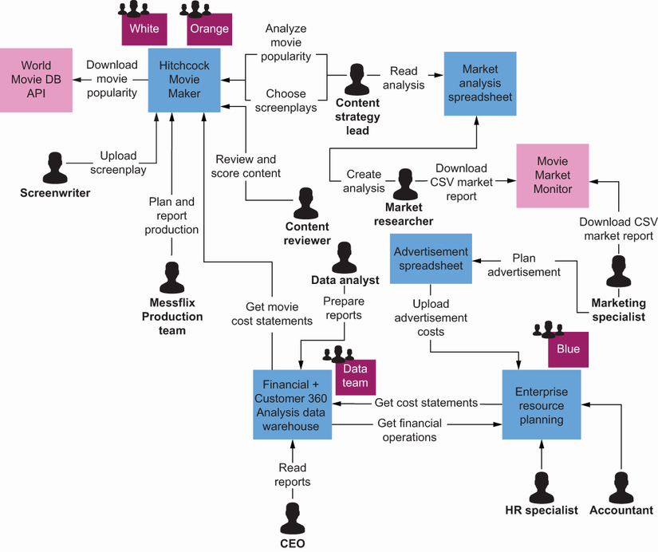
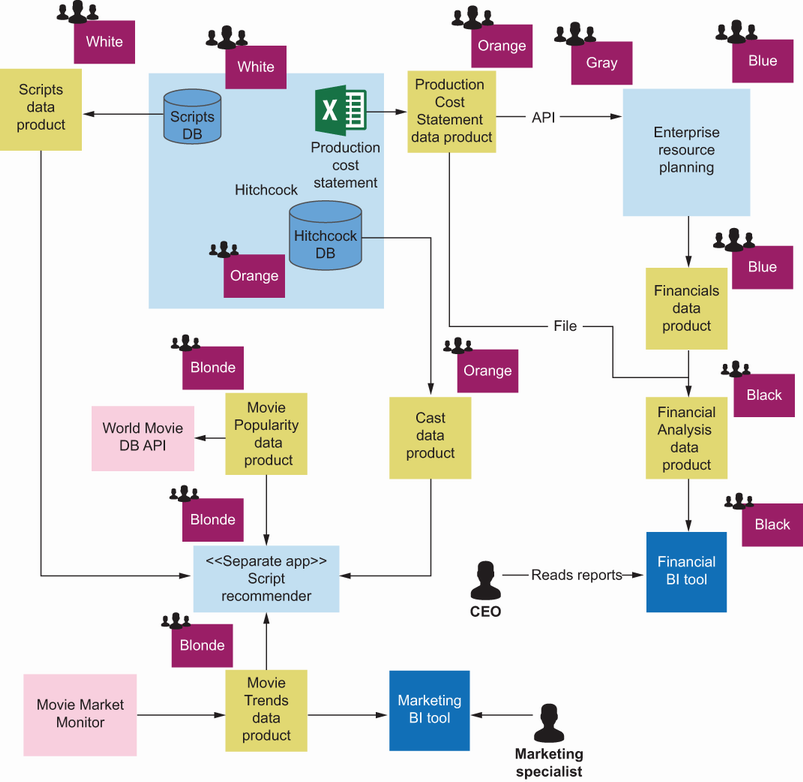
S65 - Data Product Interfaces
As It is possible to see in, data products have input and output ports. In addition, some of the output ports can be consumed by one or more data products or other systems.
Similar to microservices, It is possible to decompose the landscape into smaller pieces: data products. If teams orient them around their small subdomains and connect their output and input ports, It is evident that that data products form a mesh—a data mesh?
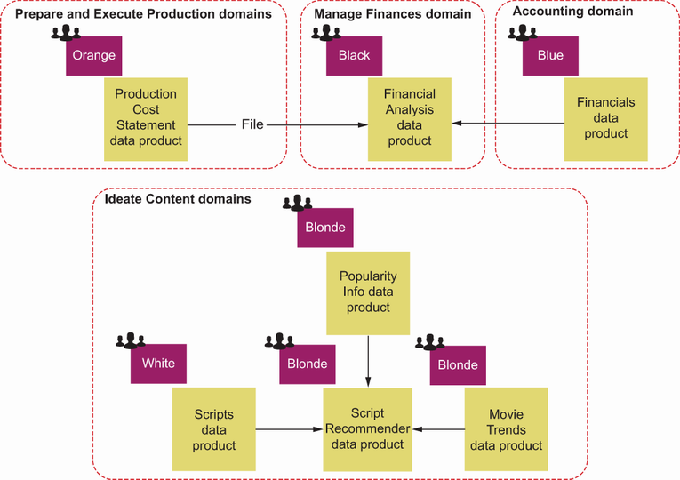
S66 - There and Applied
Teams are not there yet. Teams just applied the first principle: domain ownership.
In chapters 8 and 9, will tell the organization how each data product teams discovered can be implemented and designed. But teams already have a frame that will become the domain-oriented foundation.
S67 - Domain and Business
The domain ownership principle is based on domain-driven design.
DDD is a philosophy that includes domain thinking in every step of the software development cycle.
Business capability is a more precise term for a domain.
To understand the business domain, use tools like event storming, domain storytelling, or rich pictures.
Data product boundaries should be designed mainly based on domain decomposition or data use cases.
It is possible to use business capability modeling to perform domain decomposition.
It is recommended to use heuristics to explore boundary options and find the most optimal split.
Teams that own a data product not only own data but also its metadata, data model, terminology, ontology, data pipeline, code, and many other things.
To implement a data mesh efficiently in the organization, it is necessary to design data products and organizational structure (ownership) at the same time.
It is advisable to design team ownership with cognitive load in mind.
Data products should be interconnected through ports and form a mesh: a data mesh.
S68 - Four and Principles
Part 2. The four principles in practice.
Key takeaways
- How to apply domain ownership when defining data product boundaries.
- How domain analysis techniques help identify coherent ownership zones.
- How capability decomposition and use cases guide modeling choices.
- How to compare boundary heuristics and choose fit-for-purpose splits.